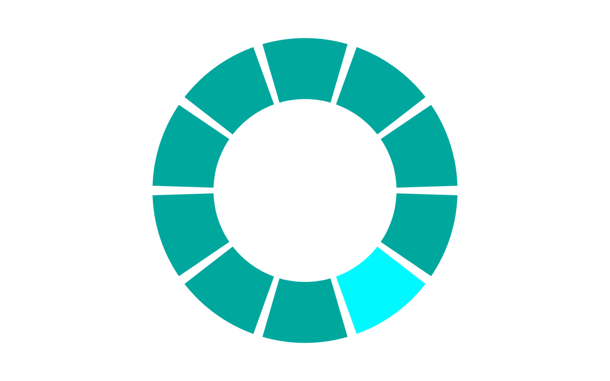

The purpose of this study was to investigate the CIE LAB space and see how the metric for just noticable difference affects how quickly humans notice differences. We are trying to see if there is a point at which just noticeable differences (JND) or the euclidean distance between colors in the CIE LAB space simply do not matter anymore, that JNDs above a certain number or under certain conditions, have no affect on how quickly we recognize color differences. In essence, color pallettes optimizaed for maximum JNDs are often awful, when we create color pallettes, how different do we really need make colors in a color pallette?
Participants of the study were shown series of images that looked like the following:
| fig.1 | fig.2 |
|  |
They would first be presented fig.1 and was instructud to click on the center dot, at which point fig.2 was immediately rendered. Then they were asked to click on the sector that differed in color in fig.2 as fast as possible and we measured the time taken between fig.2 being rendered and the moues click on the sector. We also captured whether or not a participant clicked on the correct sector.
The first ten rings of colors we showed the participants were controls that looked like the following,
These were used to approximate the fastest time a user can recognize a color difference, and move the mouse cursor over the desired sector and click.
Our study was performed on 18 participants, in total we showed them 1008 sets of images, 143 of which were controls, and 865 of which were not. To reduce the affect of how fast a participant was able move the mouse from the center of the ring, to a sector and click, for each participant, we calculated the ratio between the actual response time per image divided by the fastest response time over the set of images.
We compared this "Factor change in response time", to the JND of the colors we showed for each trial and obtained the following plot. (Blue points show correct responses, and red points show incorrect responses.)
We found that above 10 JNDs, participants were able to select the correct color 80% of the time within a factor of 2 from their fastest respons time, and above 20 JNDs they were able to do so above 93% of the time. In fact, the graph above shows that the minimum time taken to recognize the sector that had a different color changed very little, what did change is the variation in response time and the likelihood one would be able to select the correct color. We see that above 27 JNDs, every single participant was able to select the correct color without fail, and each but one response was within a factor of 3 from the fastest response time. Notice also that after 18 JNDs we see a very sharp drop in variation of response times.